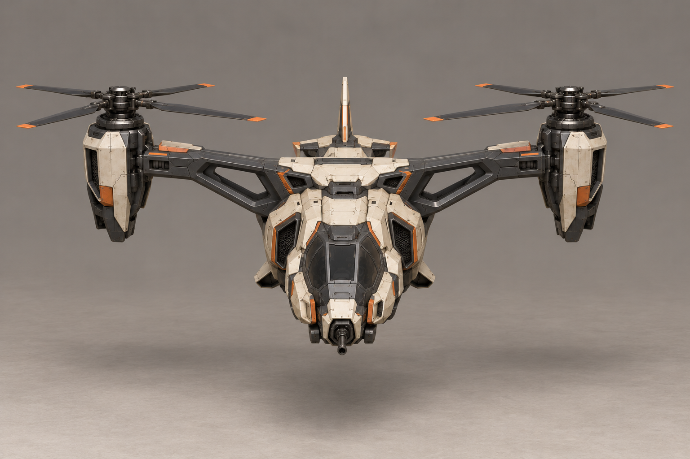
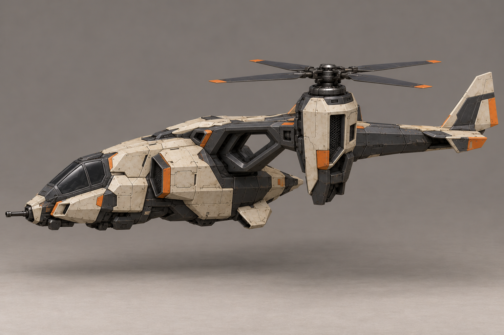
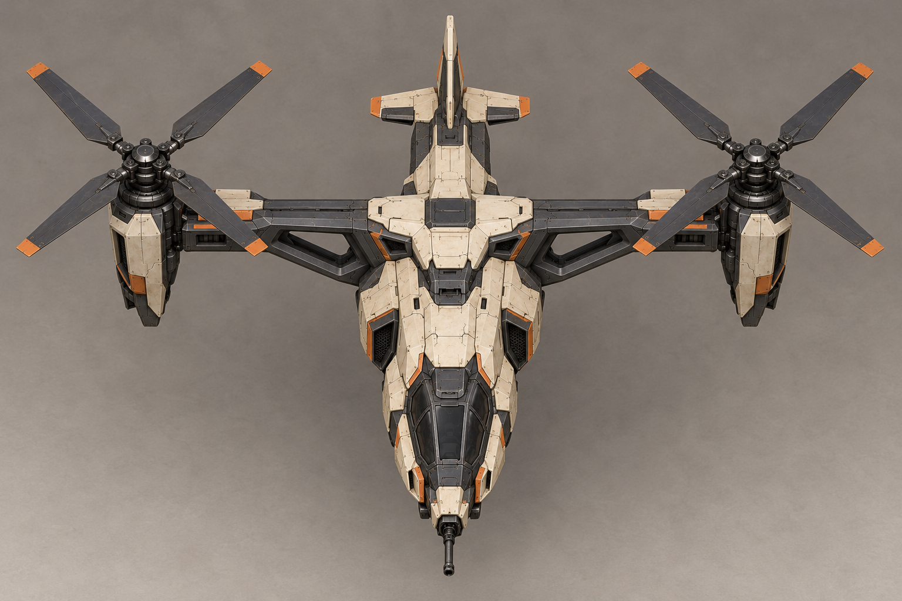
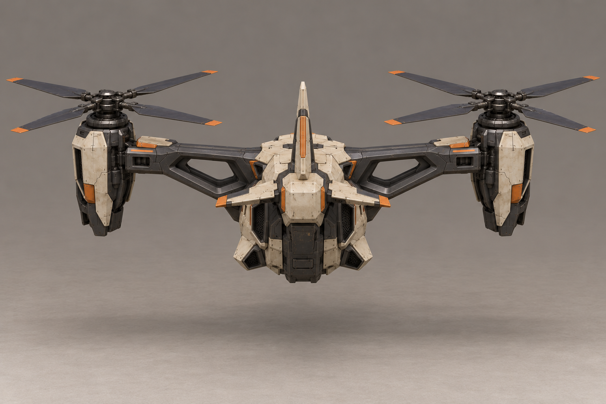

Основной выбранный E

Выбран автором 30.10.2026. Два открытых четырёхлопастных винта на боковых гондолах, поперечная графитовая рама с проёмами, компактный корпус, один киль и носовое оружие. Основной E задаёт внешний вид. Дополнительные изображения различаются перспективой и деталями; боковая проекция рамы неточная, использовать только вручную. Общую геометрию и пропорции свести по основному виду. Винты остановлены для читаемости формы. Это референсы, сетка/риг/анимации/Unity ещё не готовы.
Общий лист · Паспорт · Входы · История вариантов



